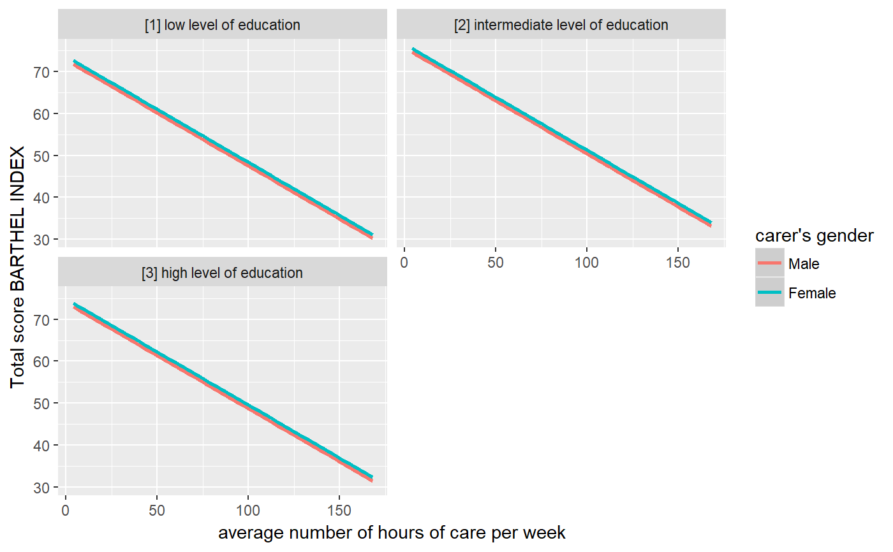
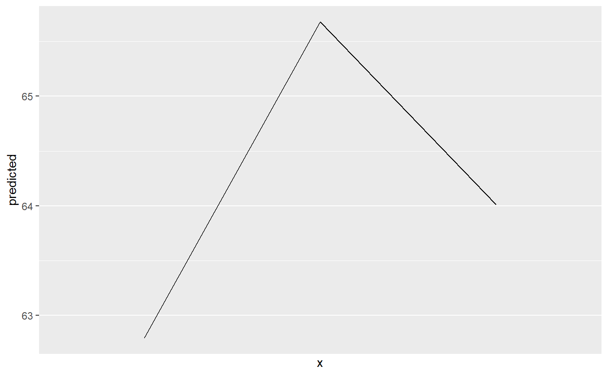

Get variable and value labels from ggeffects-objects. Functions
like ggpredict() or gginteraction() save
information on variable names and value labels as additional attributes
in the returned data frame. This is especially helpful for labelled
data (see sjlabelled), since these labels can be used to
set axis labels and titles.
get_title(x, case = NULL) get_x_title(x, case = NULL) get_y_title(x, case = NULL) get_legend_title(x, case = NULL) get_legend_labels(x, case = NULL) get_x_labels(x, case = NULL) get_complete_df(x, case = NULL)
| x | An object of class |
|---|---|
| case | Desired target case. Labels will automatically converted into the
specified character case. See |
The titles or labels as character string, or NULL, if variables
had no labels; get_complete_df() returns the input list x
as single data frame, where the grouping variable indicates the
marginal effects for each term.
data(efc) efc$c172code <- sjmisc::to_factor(efc$c172code) fit <- lm(barthtot ~ c12hour + neg_c_7 + c161sex + c172code, data = efc) mydf <- ggpredict(fit, terms = c("c12hour", "c161sex", "c172code"))#>library(ggplot2)#> #>ggplot(mydf, aes(x = x, y = predicted, colour = group)) + stat_smooth(method = "lm") + facet_wrap(~facet, ncol = 2) + labs( x = get_x_title(mydf), y = get_y_title(mydf), colour = get_legend_title(mydf) )#> $c12hour #> # A tibble: 62 x 5 #> x predicted conf.low conf.high group #> * <dbl> <dbl> <dbl> <dbl> <fct> #> 1 4 74.4 72.3 76.5 c12hour #> 2 5 74.2 72.1 76.3 c12hour #> 3 6 73.9 71.9 76.0 c12hour #> 4 7 73.7 71.6 75.7 c12hour #> 5 8 73.4 71.4 75.4 c12hour #> 6 9 73.2 71.2 75.2 c12hour #> 7 10 72.9 70.9 74.9 c12hour #> 8 11 72.7 70.7 74.6 c12hour #> 9 12 72.4 70.5 74.3 c12hour #> 10 14 71.9 70.0 73.8 c12hour #> # ... with 52 more rows #> #> $neg_c_7 #> # A tibble: 21 x 5 #> x predicted conf.low conf.high group #> * <dbl> <dbl> <dbl> <dbl> <fct> #> 1 7 75.8 73.1 78.5 neg_c_7 #> 2 8 73.5 71.1 75.9 neg_c_7 #> 3 9 71.2 69.2 73.3 neg_c_7 #> 4 10 68.9 67.1 70.8 neg_c_7 #> 5 11 66.7 65.0 68.4 neg_c_7 #> 6 12 64.4 62.7 66.0 neg_c_7 #> 7 13 62.1 60.4 63.8 neg_c_7 #> 8 14 59.8 57.9 61.7 neg_c_7 #> 9 15 57.5 55.4 59.7 neg_c_7 #> 10 16 55.3 52.8 57.7 neg_c_7 #> # ... with 11 more rows #> #> $c161sex #> # A tibble: 2 x 5 #> x predicted conf.low conf.high group #> * <dbl> <dbl> <dbl> <dbl> <fct> #> 1 1 64.1 60.7 67.5 c161sex #> 2 2 65.0 63.1 66.9 c161sex #> #> $c172code #> # A tibble: 3 x 5 #> x predicted conf.low conf.high group #> * <fct> <dbl> <dbl> <dbl> <fct> #> 1 1 62.8 59.2 66.4 c172code #> 2 2 65.7 63.5 67.8 c172code #> 3 3 64.0 60.1 67.9 c172code #> #> attr(,"class") #> [1] "ggalleffects" "list"get_complete_df(eff)#> # A tibble: 88 x 5 #> x predicted conf.low conf.high group #> <dbl> <dbl> <dbl> <dbl> <chr> #> 1 4 74.4 72.3 76.5 c12hour #> 2 5 74.2 72.1 76.3 c12hour #> 3 6 73.9 71.9 76.0 c12hour #> 4 7 73.7 71.6 75.7 c12hour #> 5 8 73.4 71.4 75.4 c12hour #> 6 9 73.2 71.2 75.2 c12hour #> 7 10 72.9 70.9 74.9 c12hour #> 8 11 72.7 70.7 74.6 c12hour #> 9 12 72.4 70.5 74.3 c12hour #> 10 14 71.9 70.0 73.8 c12hour #> # ... with 78 more rows# get marginal effects for education only, and get x-axis-labels mydat <- eff[["c172code"]] ggplot(mydat, aes(x = x, y = predicted, group = group)) + stat_summary(fun.y = sum, geom = "line") + scale_x_discrete(labels = get_x_labels(mydat))